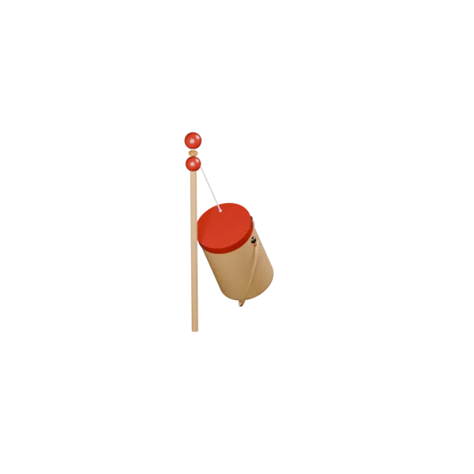

摇一下就响，体会"逐帧记得上一帧"的真物理，而不是播放一段假动画。
OPEN SOURCE · BLENDER 5.2
可以在宇宙第一
开源 3D 软件内
玩竹知了了
小时候甩着会叫的竹知了，被重新做成 Blender 几何节点案例——绳系物理、惯性、弹性、翅膀扇动与动作声音触发，全部开源，文件级带走。
- 纯节点物理Simulation Zone 逐帧积分
- 动一下响一次动作边沿触发，不叠音
- 模块可拆5 个资产独立带走


正向视角 侧向视角 ← 拖我切换 →适合谁
绳系、惯性、翅膀扇动或动作声音触发，5 个资产直接塞进自己项目。
给学生或观众一个"摇一下就响"的玩具，比讲 PPT 直观得多。
惯性 · 弹性 · 重力 · 刚性绳长 · 翅膀扇动 · 动作声音 · 几何节点 · 惯性 · 弹性 · 重力 · 刚性绳长 · 翅膀扇动 · 动作声音 · 几何节点
HOW IT WORKS
不是让知了跟着杆走。
是让它有自己的物理脾气。
移动锚点
甩杆末端只提供动态锚点。跨帧位移形成速度，速度才会产生真正的甩动——不是位移驱动位置，是位移驱动惯性。
保存状态
Simulation Zone 记住上一帧的位置和速度，逐帧积累惯性。停手之后，知了还会因为惯性多甩几下才停下。
绳子只拉不推
超过绳长才施加回拉；需要时再投影到固定半径，兼顾弹性和可控性。松弛时不反向推开。
一次动作，一次声音
声音与节点解耦。摇杆从静止进入运动时触发一次；持续晃动期间不叠音；静止超过设定时间后，下一次动作才重新待命。
差异点THE LOOP
每一帧，都把运动重新算一遍。
摇杆影响锚点，锚点影响绳子，绳子影响速度，速度决定下一帧。翅膀和声音从同一动作获得信号，却保持独立模块——改一个不连累另一个。
TRY IT
不用打开 Blender，
先听一下它响。
占位鸣叫
这是程序生成的占位声音，模拟"动一下响一次"的边沿触发效果。下载 .blend 后可以换成你拥有使用权的真实录音。
14 KB · WAV · 程序生成
TUNE THE FEEL
不是一个动画文件。
是一套可以调手感的系统。

LOOK INSIDE
力不是猜出来的。
每一项都在节点里。
弹性绳模块先计算锚点到质点的方向和伸长量，再把刚度、弹性倍率与阻尼组合成回拉加速度，最后叠加重力。模块只有明确的输入与一个加速度输出，因此可以脱离竹知了，在吊坠、尾巴、挂件和摆锤中复用。
- ① 锚点位置输入
- ② 方向与伸长量计算
- ③ 刚度 × 弹性 + 阻尼
- ④ 回拉加速度输出

REUSABLE BY DESIGN
案例是一整只知了。
资产是能带走的办法。
锚点速度
跨帧位置差 → 速度，只供下游读取从跨帧位置变化提取速度。
弹性绳加速度
锚点方向与伸长量 → 刚度×弹性 + 阻尼 = 回拉加速度计算只拉不推的回弹作用力。
可选刚性绳约束
开关切换自由绳长与固定半径（投影）一键切换自由绳长和固定半径。
翅膀扇动
独立启停 / 速度 / 幅度，与绳解算完全解耦独立控制启停、速度与幅度。
声音触发器
读取甩杆变换：静止→运动触发一次，持续不叠音识别新动作，避免连续叠音。

HOW TO USE
下载，打开，甩起来。
打开案例
下载 .blend，用 Blender 5.2 或更新版本打开「物理竹知了」物体。
摇动甩杆
选中甩杆，保持 X 轴约 90°，旋转本地 Z 或给它打关键帧。
播放调参
播放时间轴让 Simulation Zone 逐帧计算惯性；在修改器中调整绳长、重力、刚度、阻尼与扇动。
触发声音
需要实时声音时，在文本编辑器运行一次「知了_声音触发模块」，到控制器里换音效与阈值。
REFERENCE & CREDIT
从浏览器里的竹知了，
走进 Blender 的节点世界。
玩具主题、交互方向与物理说明参考开源展示项目 imsai-sh/zhuzhiliao ↗。本项目没有复制其真实录音或 Web 源码，Blender 模型、节点系统与声音模块均为独立实现。
参考仓库当前未提供独立 LICENSE 文件；使用其内容前请自行确认授权。